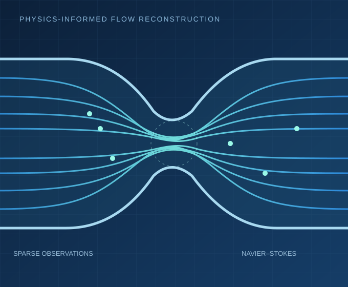

Physics-informed ML
Neural networks constrained by differential equations, physical laws, and boundary conditions.
Applied mathematics · Scientific machine learning
I study how physical laws and data can work together to solve challenging inverse problems in computational science.
M.Sc. Applied Mathematics · Indian Institute of Engineering Science and Technology (IIEST), Shibpur
Seeking PhD opportunities · USA · Fall 2027

01 / ABOUT
I am a master's student in Applied Mathematics at IIEST Shibpur, with a strong interest in physics-informed machine learning, numerical methods, and computational modeling.
During my research internship at IIT Kanpur, I worked under Prof. Ashoke De on inverse physics-informed neural networks for reconstructing stenotic blood flow from limited measurements. This work motivated my interest in reliable, interpretable machine learning for scientific applications.
I am particularly interested in pursuing doctoral research in scientific machine learning, physics-guided AI, and inverse problems.
02 / RESEARCH
Connecting mathematical structure with data-driven computation.
Neural networks constrained by differential equations, physical laws, and boundary conditions.
Inferring hidden physical states and quantities from incomplete or sparse observations.
Fluid-flow reconstruction, Navier–Stokes modeling, and wall shear stress estimation.
Numerical analysis and machine learning for physics-based and biomedical applications.
03 / SELECTED WORK
Selected academic work, from scientific ML to biomedical data.
Developed a geometry-aware inverse physics-informed neural network to reconstruct two-dimensional velocity fields and estimate wall shear stress in a stenosed artery using sparse sensor measurements.
IIT Kanpur · Supervised by Prof. Ashoke De
Manuscript in preparation
Explored machine learning approaches for emotion recognition using electroencephalography signals, drawing on signal processing and classification methods.
Studied supervised text classification workflows and the application of machine learning models to language-based prediction tasks.
Investigated core graph-theoretic ideas and network representations, building foundations for future work with graph-based machine learning.
04 / JOURNEY
Academic preparation and research experience.
Summer Research Internship Program · Department of Aerospace Engineering
Worked with Prof. Ashoke De on inverse PINNs for velocity reconstruction and wall shear stress in stenotic flows.
M.Sc. in Applied Mathematics · CGPA 8.88/10
Coursework and training in numerical analysis, linear algebra, differential equations, and applied mathematical methods.
B.Sc. (Honours) in Mathematics · First Class
05 / RESEARCH WRITING
Current research is being developed into a technical manuscript. Publication details will be added after public release.
Ananya Singha Roy and Ashoke De
Research conducted at IIT Kanpur, 2026. No journal acceptance or publication claimed.
06 / TOOLKIT
Methods and tools supporting my research.
07 / LOOKING AHEAD
I am seeking PhD opportunities in the United States for Fall 2027, with a focus on scientific machine learning, inverse problems, and computational science.
I am interested in research that connects mathematical structure, physical models, and learning from limited data.
DOCTORAL RESEARCH INTERESTS